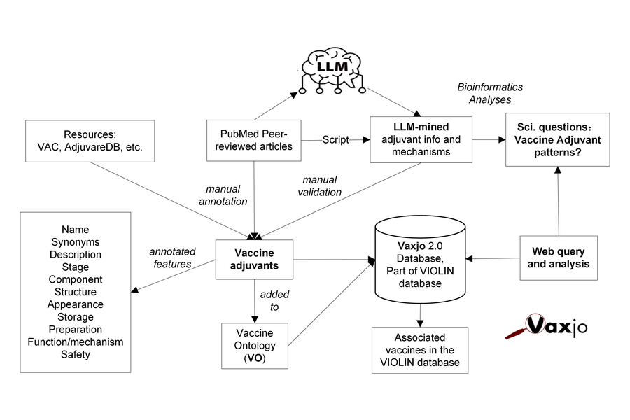
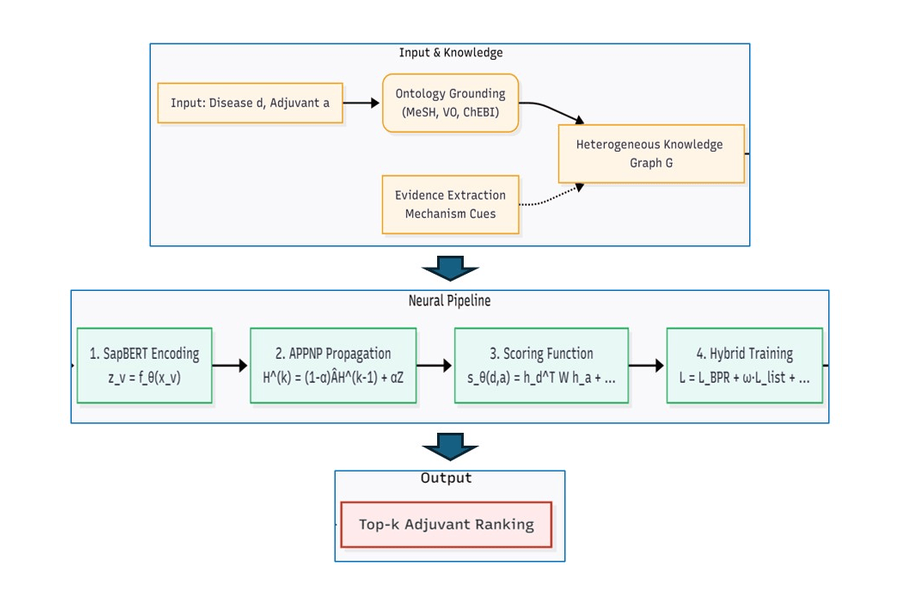
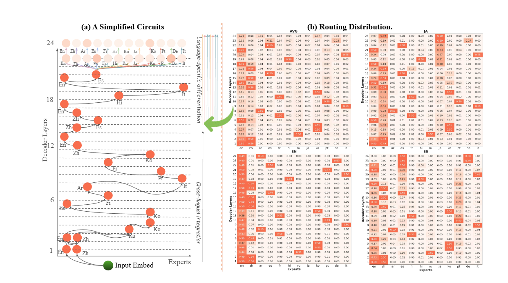
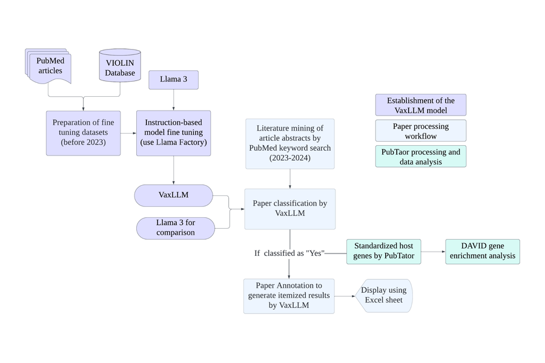
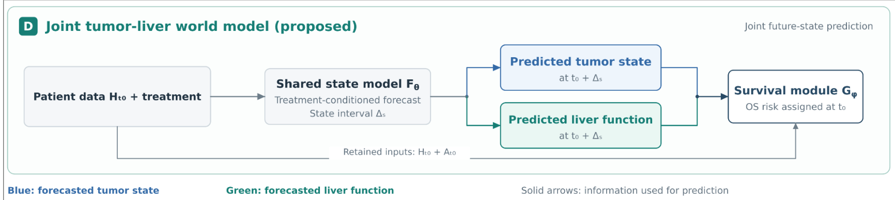
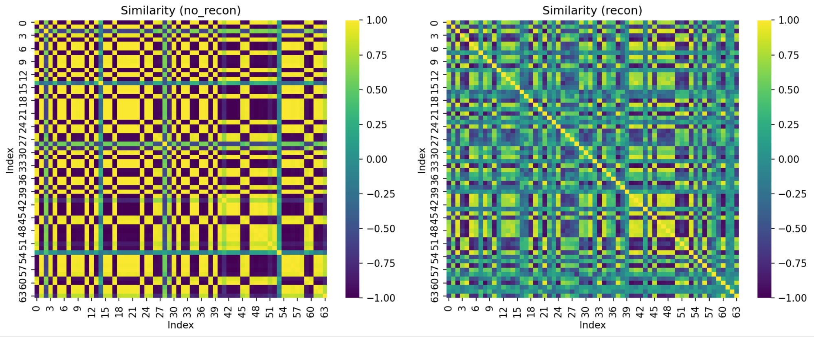

Vaxjo 2.0: An Ontology- and Large Language Model-Powered Knowledge Base of Vaccine Adjuvants and Mechanisms
Frontiers in Cellular and Infection Microbiology, 2026
Ph.D. Student in Computer Science · University of Virginia
I am a first-year Ph.D. student in Computer Science at the University of Virginia, advised by Prof. Xi Peng.
I am interested in how AI systems learn, represent information, and reason. I aim to develop and test falsifiable hypotheses about these processes, drawing on ideas from cognitive science, neuroscience, mathematics, and related fields.
Before joining UVA, I worked at CUHK-Shenzhen with Prof. Zhen Liu on discrete generative models and with Prof. Benyou Wang on multilingual medical language models. I also worked with Prof. Yongqun He at the University of Michigan Medical School on machine learning for vaccine research.

Frontiers in Cellular and Infection Microbiology, 2026

bioRxiv, 2025
An ontology-grounded graph learning framework for vaccine adjuvant recommendation under sparse and heterogeneous biomedical evidence.

International Conference on Learning Representations (ICLR), 2025
We study how cross-lingual information is organized across model layers and use linguistic priors about language families to guide expert sharing in multilingual medical LLMs.


Graduate Research Rotation · University of Virginia · Fall 2026
Can forecasting future disease states improve survival prediction? I am exploring a framework that jointly forecasts tumor and liver-function changes from longitudinal imaging and multimodal clinical data, with a focus on hepatocellular carcinoma (HCC).

GenLab · CUHK-Shenzhen
What happens to the learned embeddings when we train a discrete flow model? In our experiments, 16-dimensional embeddings became nearly one-dimensional even as the training loss decreased. An embedding reconstruction penalty partially mitigated this collapse.
He Group · University of Michigan Medical School
How can structured biomedical knowledge help when experimental evidence is sparse? I led the development of VaxjoGNN, an ontology-grounded graph model for vaccine adjuvant recommendation, and evaluated how well it ranked adjuvants for held-out diseases.
Ph.D. in Computer Science
Advisor: Prof. Xi Peng
B.S. in Data Science and Big Data Technology